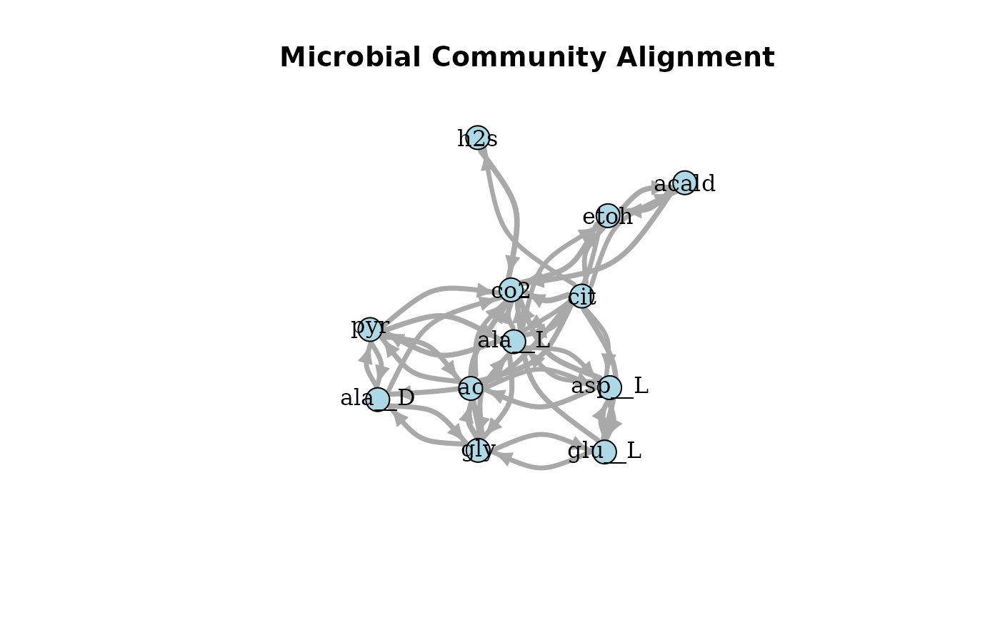
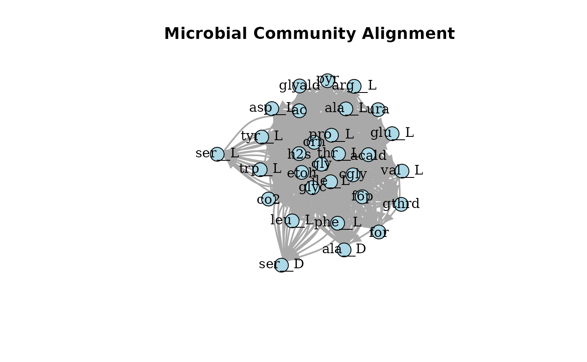
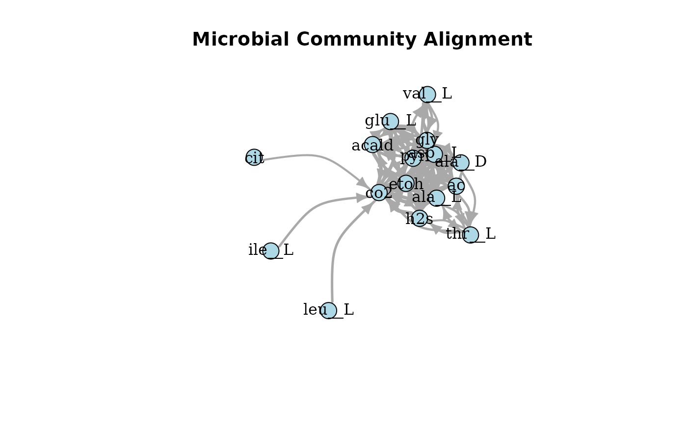
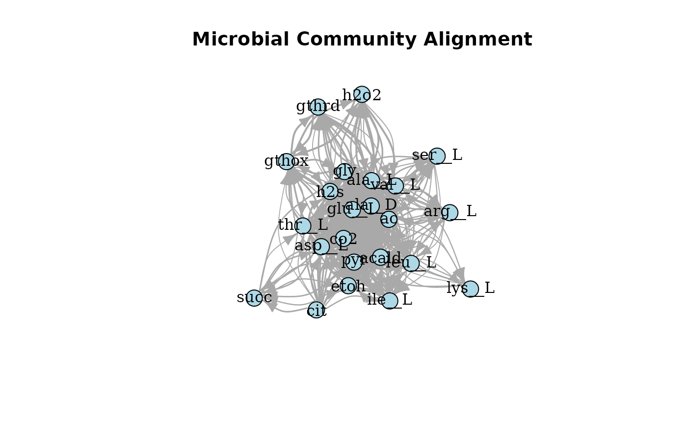

Experiment 1
experiment-1.RmdExperiment 1
This vignette outlines a full workflow for the fsmc
package. This includes the following steps:
- Community object creation
- Community alignment
- Analysis of the alignment
Motivation
The data analysed here was generated with misosoup, a
command line tool designed to identify minimum viable communities in
which each member is essential for the community to function. The data
is provide with the fsmc package and can be used to test
its functionality.
The data set consists of 56 different microbial consortia, including 26 with acetate as the carbon source, 26 with citrate as the carbon source, and 4 with fructose 6-phosphate (f6p) as the carbon source.
Analysis per Substrate
### Could provide this in the data
ac <- keep(misosoup, str_starts(names(misosoup), "ac")) %>% imap(newMiCo)
cit <- keep(misosoup, str_starts(names(misosoup), "cit")) %>% imap(newMiCo)
f6p <- keep(misosoup, str_starts(names(misosoup), "f6p")) %>% imap(newMiCo)
# discard beccause the only solution with this focal strain
ac <- discard(ac, names(ac) %in% "ac_A3R04_1")
plotAlignmentHeatmap(ac_alig, 0.8)
plotAlignmentHeatmap(cit_alig, 0.8)
plotAlignmentHeatmap(f6p_alig, 0.5)
plotAlignmentNetwork(ac_alig, 0.8)
plotAlignmentNetwork(cit_alig, 0.8)
plotAlignmentNetwork(f6p_alig, 0.5)
Analysis per Focal Strain
Only A1R12 in two substrates.
A1R12 <- keep(misosoup, str_detect(names(misosoup), "A1R12")) %>% imap(newMiCo)
A1R12_alig <- newMiCoAl(A1R12)
plotAlignmentHeatmap(A1R12_alig, 0.8)
plotAlignmentHeatmap(A1R12_alig, 0.5)
plotAlignmentHeatmap(A1R12_alig, 0.2)
plotAlignmentNetwork(A1R12_alig, 0.8)
plotAlignmentNetwork(A1R12_alig, 0.5)
plotAlignmentNetwork(A1R12_alig, 0.2)
Create a MiCo Object
fsmc contains a set of example data that can be used for
the analysis of microbial communities. For this example, we will use
data created by MiSoS(oup). Two example
communities are provided in the package ac_A1R12_1 and
cit_A1R12_1.
The MiCo function can take either a path to a .csv file
or a data frame/tibble as input.
# Inspect the data
ac_A1R12_1
#> # A tibble: 28 × 3
#> metabolites species fluxes
#> <chr> <chr> <dbl>
#> 1 ac A1R12 0.773
#> 2 ac I2R16 -10.8
#> 3 acald A1R12 -1.12
#> 4 acald I2R16 1.12
#> 5 ala__D A1R12 0.760
#> 6 ala__D I2R16 -0.760
#> 7 ala__L A1R12 1.22
#> 8 ala__L I2R16 -1.22
#> 9 asp__L A1R12 -0.583
#> 10 asp__L I2R16 0.583
#> # ℹ 18 more rows
cit_A1R12_1
#> # A tibble: 38 × 3
#> metabolites species fluxes
#> <chr> <chr> <dbl>
#> 1 ac A1R12 10.1
#> 2 ac m_1A01 -10.1
#> 3 acald A1R12 8.31
#> 4 acald m_1A01 -8.31
#> 5 ala__D A1R12 1.30
#> 6 ala__D m_1A01 -1.30
#> 7 ala__L A1R12 1.90
#> 8 ala__L m_1A01 -1.90
#> 9 arg__L A1R12 -0.00286
#> 10 arg__L m_1A01 0.00286
#> # ℹ 28 more rows
# Create MiCo objects
mc1 <- newMiCo(ac_A1R12_1)
mc2 <- newMiCo(cit_A1R12_1)
mc3 <- newMiCo(ac_A1R12_2)
mc4 <- newMiCo(cit_A1R12_2)
# Inspect MiCo Objects
mc1
#> ac_A1R12_1: MiCo (MicrobialCommunity) Object
#> - Unique microorganisms (MO): 2
#> - Unique metabolites (met): 14
mc1
#> ac_A1R12_1: MiCo (MicrobialCommunity) Object
#> - Unique microorganisms (MO): 2
#> - Unique metabolites (met): 14Align MiCo Objects
Two MiCo objects can be aligned by creating a
MiCoAl object. The MiCoAl creator function can
take any number of MiCo objects as input.
# Align the MiCo objects by creating a MiCoAl object
alignment <- newMiCoAl(mc1, mc2, mc3, mc4)
# Inspect the alignment
alignment
#> Microbial Community Alignment Object (MiCoAl)
#> Alignment of 4 communities with an overall score of ### ToDo ###.